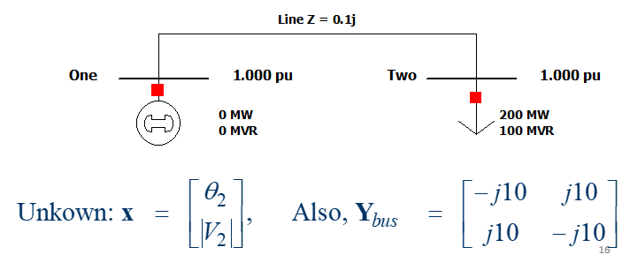

electricpy.sim.mbuspowerflow¶
-
electricpy.sim.mbuspowerflow(Ybus, Vknown, Pknown, Qknown, X0=
'flatstart', eps=0.0001, mxiter=100, returnct=False, degrees=True, split=False, slackbus=0, lsq_eps=0.25)[source]¶ Multi-Bus Power Flow Calculator.
Function wrapper to simplify the evaluation of a power flow calculation. Determines the function array (F) and the Jacobian array (J) and uses the Newton-Raphson method to iteratively evaluate the system to converge to a solution.
- Parameters:¶
- Ybus : array_like¶
Postitive Sequence Y-Bus Matrix for Network.
- Vknown : list of list of float¶
List of known and unknown voltages. Known voltages should be provided as a list of floating values in the form of: [mag, ang], unknown voltages should be provided as None.
- Pknown : list of float¶
List of known and unknown real powers. Known powers should be provided as a floating point value, unknown powers should be provided as None. Generated power should be noted as positive, consumed power should be noted as negative.
- Qknown : list of float¶
List of known and unknown reactive powers. Known powers should be provided as a floating point value, unknown powers should be provided as None. Generated power should be noted as positive, consumed power should be noted as negative.
- X0 : {'flatstart', list of float}, optional¶
Initial conditions/Initial guess. May be set to ‘flatstart’ to force function to generate flat voltages and angles of 1∠0°. Must be specified in the form: [Θ1, Θ2,…, Θn, V1, V2,…, Vm] where n is the number of busses with unknown voltage angle, and m is the number of busses with unknown voltage magnitude.
- eps : float, optional¶
Epsilon - The error value, default=0.0001
- mxiter : int, optional¶
Maximum Iterations - The highest number of iterations allowed, default=100
- returnct : bool, optional¶
Control argument to force function to return the iteration counter from the Newton-Raphson solution. default=False
- degrees : bool, optional¶
Control argument to force returned angles to degrees. default=True
- split : bool, optional¶
Control argument to force returned array to split into lists of magnitudes and angles. default=False
- slackbus : int, optional¶
Control argument to specify the bus index for the slack bus. If the slack bus is not positioned at bus index 1 (default), this control can be used to reformat the data sets to a format necessary for proper generation and Newton Raphson computation. Must be zero-based. default=0
- lsq_eps : float, optional¶
Least Squares Method (Failover) Epsilon - the error value. default=0.25

Examples
>>> >>> # Perform Power-Flow Analysis for Figure >>> import numpy as np >>> from electricpy import sim # Import Simulation Submodule >>> ybustest = [[-10j,10j], ... [10j,-10j]] >>> Vlist = [[1,0],[None,None]] # We don't know the voltage or angle at bus 2 >>> Plist = [None,-2.0] # 2pu watts consumed >>> Qlist = [None,-1.0] # 1pu vars consumed >>> sim.mbuspowerflow( ... ybustest, ... Vlist, ... Plist, ... Qlist, ... degrees=True, ... split=True, ... returnct=True ... ) ([array([-13.52185223]), array([ 0.85537271])], 4)See also
NewtonRaphsonNewton-Raphson System Solver
nr_pqNewton-Raphson System Generator
electricpy.powerflowSimple (2-bus) Power Flow Calculator